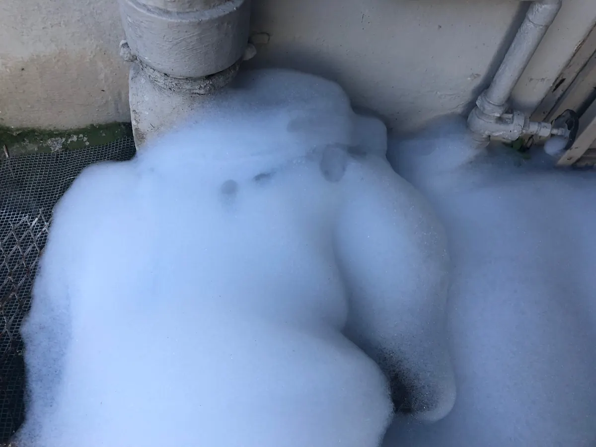

A washing machine drain that overflows, gurgles, or backs up again and again is rarely just a clog. In most cases, the real culprit is improperly sized drain piping — plumbing that was never designed to handle the volume and speed of water a modern washer discharges.

As your local, veteran-owned plumbing experts, Angle Stop Plumbing helps homeowners diagnose and permanently correct drain sizing problems before they turn into water damage, mold, or a failed appliance.
Why Pipe Size Determines Drainage Performance
Plumbing systems are engineered around flow rate — how much water a pipe can move in a given time. A pipe that's undersized for its job can't keep up, no matter how clean or clog-free it is.
Washing machines put unusually high demand on a drain line because they:
- Discharge water in fast, high-volume bursts rather than a steady trickle
- Often outpace older drain lines installed before high-efficiency washers were common
- Require correct standpipe height, pipe diameter, slope, and venting to work together
When even one of those elements — especially diameter — is wrong, backups follow.
Signs Your Washing Machine Drain Is Undersized
Homeowners often search for help with "washer overflowing during spin cycle" or "laundry drain backing up" assuming it's a simple blockage. Watch for these signs that point to a sizing problem instead:
- Water rising out of the standpipe during the wash or spin cycle
- Gurgling in nearby drains, tubs, or toilets when the washer runs
- Water that drains slowly or lingers in the pipe after a cycle
- Recurring clogs that come back shortly after cleaning
- Musty or sewage-like odors near the laundry area
- Backups that spread to other fixtures on the same drain line
If you've had the line snaked more than once with no lasting fix, the pipe itself is likely too small for the job.
How an Undersized Drainpipe Causes Backups
- Rapid discharge — the washer pump forces a large volume of water into the line all at once.
- Restricted diameter — a pipe that's too narrow can't move that volume fast enough.
- Blocked airflow — drain lines need room for air as well as water; undersized pipes trap air and create pressure.
- Backpressure builds — trapped air and slowed water compound the problem.
- Water reverses course — with nowhere else to go, it rises back up the standpipe and onto your floor.
What Happens If It's Left Unaddressed
Ignoring a sizing issue doesn't make it go away — it compounds:
- Water damage to flooring, drywall, and cabinetry near the laundry area
- Mold and mildew from repeated, ongoing moisture
- Premature wear on your washer's pump from fighting backpressure
- Wasted money on repeat drain cleanings that never solve the actual problem
- Escalating risk of a major leak or insurance claim
How Angle Stop Plumbing Corrects the Problem
We diagnose and fix the cause, not just the symptom:
- Full inspection of standpipe height, pipe diameter, slope, and venting
- Code comparison to confirm whether your existing line meets current standards
- Precise recommendation for the correct pipe size and layout for your home and washer
- Professional resizing or replacement of the drain line
- Real-world testing with your washer running, confirming the backup is gone for good
FAQ: Washing Machine Drain Backups
How do I know if it's a clog or a sizing issue? If cleaning or snaking the line only fixes the problem temporarily and it returns within a few cycles, sizing — not debris — is likely the real cause.
What size drainpipe does a washing machine need? Requirements vary by local code and washer type, but most residential washing machine standpipes need at minimum a 2-inch drain line with proper venting. An inspection confirms what your specific setup requires.
Can I just install a bigger standpipe myself? Standpipe height, pipe diameter, trap placement, and venting all have to work together correctly. A mismatched DIY fix can make backups worse or violate local code.
Will homeowner's insurance cover the water damage? Coverage varies by policy and cause. Preventing the backup in the first place is far cheaper and simpler than filing a claim after the damage is done.
Protect Your Home from Preventable Water Damage
A washing machine that keeps flooding your laundry room isn't something to keep working around — it's a plumbing design issue with a permanent fix.
Angle Stop Plumbing is ready to inspect your drain system, correct improper pipe sizing, and make sure your washer runs without backing up again.
Call Angle Stop Plumbing today — your local, veteran-owned experts in correcting drainpipe sizing and stopping water backups at the source.